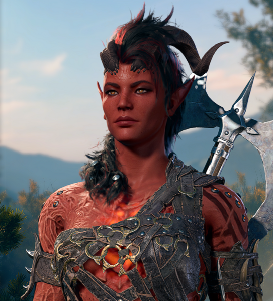
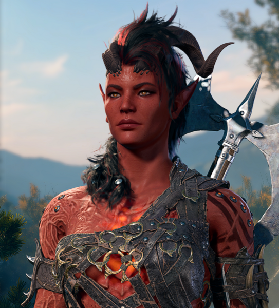

Información del Personaje
Nombre: Karlach Cliffgate
Raza: Tiefling (Zariel)
Clase: Bárbara
Historia: Karlach es una guerrera feroz que ha luchado en numerosas batallas. Su fuerza y determinación la hacen destacar entre sus compañeros.
La vida en Baldur's Gate
Nacido de Pluck y Caerlack Cliffgate, Karlach se crió en Baldur's Gate en un hogar modesto pero feliz en la Ciudad Exterior. Joven e inquieta, Karlach a menudo realizaba trabajos ocasionales como un medio para mantener a sus padres, a menudo metiéndose en problemas mientras tanto. Ya de niña era alegre y llena de vida y, a pesar de las dificultades, amaba su vida en la ciudad, rodeada de familiares y amigos. En algún momento, Karlach fue contratado por Enver Gortash Enver Gortash para que actúe como su guardaespaldas. Ascendiendo rápidamente a través de los círculos criminales y políticos de la ciudad, Gortash comenzaba a pintarse una diana en la espalda, y Karlach parecía la persona ideal para protegerlo. Atraída inicialmente por el dinero y la oportunidad de apoyar financieramente a sus padres, Karlach finalmente desarrolló un profundo respeto por Gortash, no solo porque confiaba en ella lo suficiente como para poner su vida en sus manos, sino porque también la hacía sentir valorada. La pareja trabajó bien juntos durante un tiempo, hasta que Gortash hizo un trato con el Archidiablo Zariel, y le vendió Karlach por una gran suma de dinero con el fin de financiar sus planes para dominar la ciudad. El interés de Zariel en el tiefling era probar su nueva máquina infernal, mientras que Gortash confiaba en que ella podría manejarla y creía que también serviría como un prototipo ideal para sus autómatas infernales soñados.
Averno y la Guerra Sangrienta
Traicionado y vendido al diablo, Karlach fue llevado al Averno y rápidamente siguió adelante. Sucediendo más rápido de lo que podía procesarlo, Zariel ordenó que su corazón fuera reemplazado por una máquina infernal, diseñada para probar los límites de la máquina y el soldado. El archidiablo rápidamente la puso a ella y a su nuevo, infernal y mecánico corazón a trabajar, reclutando a Karlach en su ejército para luchar en la Guerra Sangrienta. Atrapado y sin otras opciones a mano, Karlach lucharía durante diez años en la guerra, sobreviviendo día a día impulsado por la venganza y el deseo de vivir libre. Ella demostraría ser una soldado excepcional, matando a grandes demonios y convirtiéndose en una de las luchadoras más preciadas de Zariel. A la vez prisionera y campeona del archidemonio, durante todo el tiempo estuvo sola, rodeada de diablos y demonios que no ofrecían consuelo, lejos de casa y de todos los que amaba.
Escapa a bordo del nautiloide
Después de una década en los Infiernos, la repentina aparición de un Nautiloide se presentó como una oportunidad para escapar, y Karlach aprovechó la oportunidad. Dividiendo a los demonios que la rodeaban, se dirigió hacia la nave que se precipitaba antes de encontrarse con Wyll, llevado al Averno para cazarla. Los dos lucharon brevemente, Wyll persiguiendo mientras Karlach buscaba desesperadamente la nave, hasta que lograron llegar al nautiloide antes de ser separados durante el asedio. Capturado por los desolladores de mentes mientras la nave escapaba del Averno, Karlach fue atacado como todos los demás invitados no invitados, y esperó una lenta transformación a través de Ceremorphosis.
Habilidades Especiales
- Furia de Batalla: Aumenta su daño en combate.
- Resistencia Sobrehumana: Permite soportar más daño.
- Tácticas de Guerra: Mejora la estrategia en el campo de batalla.
Estadísticas
- Fuerza: 17
- Destreza: 13
- Constitución: 15
- Inteligencia: 8
- Sabiduría: 12
- Carisma: 10
Galería de Imágenes
.png) 
